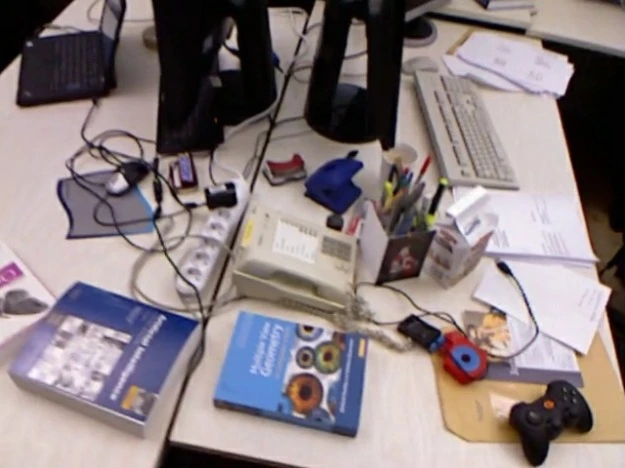
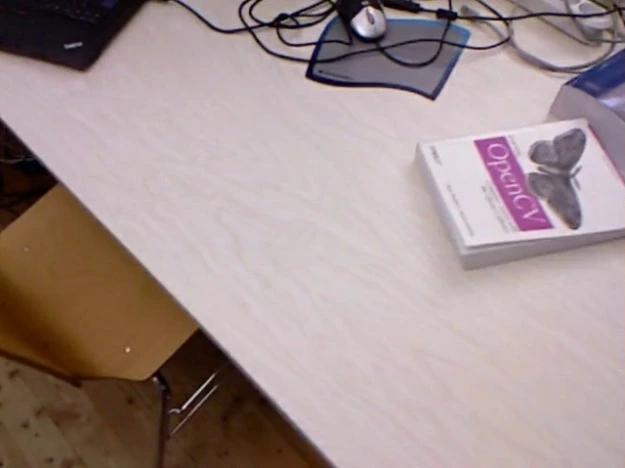
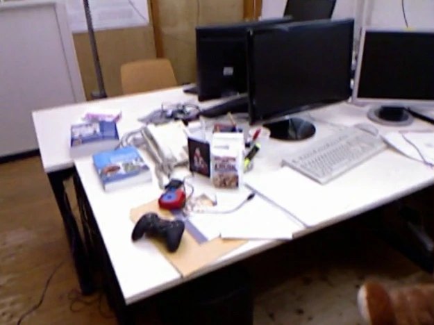

SSELECT
语义感知的图片选择
优先看见新物品，
也关注还没重建好的区域。
综合语义新颖性、图像误差和物品覆盖选择训练视角，并对重点区域安排局部训练窗口。保留均匀探索机会，让一般表面持续得到优化。



新物品 / 高误差 / 覆盖不足
↗ 重点观测进入训练队列
机制示意，非某次训练的逐帧记录把真实室内录像重建为持续生长的 Gaussian 地图。让物品、边界与任务重要性，共同决定地图如何更新。
持续建图，
把计算用在更重要的地方。
PROJECT OVERVIEW 01 / 项目概览
新画面不断到来，三维地图既要补全新区域，也要保住旧区域的质量。本项目把语义理解融入增量 3D Gaussian 重建，联合管理选图、增密与历史回放。
从视频解码、相机估计到语义学习、预算控制与浏览器展示，形成一套可运行、可观测、可复现的三维视觉系统。
INTERACTIVE DEMO 02 / 实际功能
切换重建阶段与语义层级，
探索同一场景的外观、物品和细区域。
加载完整高斯 · 当前阶段约 20 MB
最终阶段 · 地图累计扩展至 498,621 个高斯
真实数据回放：相机由离线 SfM 估计，Gaussian 按时间前缀增量优化。物品与细区域来自 SAM2 / CLIP 预测；本演示为已完成建图过程的回放。
END-TO-END PIPELINE 03 / 完整链路
输入普通 RGB 录像，
无需预先提供深度、真值位姿或分割标注。
支持 PyAV 可解码的 MP4、MOV、MKV、AVI 等视频。按时间抽帧、过滤重复画面、处理旋转，并保留时间戳，建立后续重建的统一数据入口。
PyAV · 时间抽帧 · 重复帧过滤SEMANTICS AS A CONTROLLER 04 / 创新设计
以物品和区域为单位组织计算。
把语义信息接入重建过程中的三个关键环节。
语义感知的图片选择
综合语义新颖性、图像误差和物品覆盖选择训练视角，并对重点区域安排局部训练窗口。保留均匀探索机会，让一般表面持续得到优化。



物品与边界驱动的预算分配
以屏幕空间梯度为基础，结合物品重要性、边界分数与置信度决定复制或分裂。对可靠背景中贡献较低的高斯进行保护性裁剪，在固定容量内重新分配表达能力。
物品覆盖引导的历史回放
依据物品、细区域和时间覆盖构建旧视角回放池，逐步调节新旧观测比例。针对覆盖不足的区域补充训练，减少新场景更新对已有地图的影响。
语义在训练中持续嵌入
学习 16 维压缩 CLIP 特征，结合物品 ID、细区域 ID、置信度与边界分数持续更新。语义特征监督与几何梯度分离，几何由 RGB 误差和语义控制策略优化。
BUILT AS A SYSTEM 05 / 工程能力
围绕资源可控、训练稳定与结果可追溯，
完成从研究机制到完整工程链路的实现。
每批清空过期统计；新生高斯通过年龄、多视角梯度观测与冷却条件后再参与增密。最后固定拓扑，完整图像均衡回放已到达训练视角。
示例配置：每批 2,400 步。观测计数采用梯度支持代理。按阶段扩展高斯预算，控制增长速度；保留一般表面增长机会，保护背景空间代表。同步更新参数、语义与 Adam 状态。
记录采样、分裂与裁剪事件、显存峰值、延迟和逐视角指标。保存每阶段完整 splats、最终模型与 Adam 检查点。
提供 Colab 笔记本、模块化 Python 入口、固定配置和原始指标。CPU / CUDA 回归覆盖梯度、语义继承、容量与调度状态。
MEASURED, NOT IMAGINED 06 / 实测表现
真实室内 RGB 录像，NVIDIA L4 实测。
从输入定位、地图扩展到留出视角质量，全程可追溯。
拖动分界线，查看外观重建的实际细节。
展示来自 TUM desk 的约 20.4 秒真实录像：抽取并注册 59 帧，52 帧用于 Gaussian 训练、7 帧留出评估；4 批、每批 2,400 步，seed 7，容量上限 500,000。相机与稀疏几何通过完整视频的离线 COLMAP 估计；测试帧不参与 Gaussian 拟合，但参与 SfM。当前是增量重建回放，尚非端到端实时 SLAM。
PSNR 为指定场景的测试视角均值；语义与细区域由 SAM2 / CLIP 预测，未经人工真值验证。单场景、单种子实测不代表跨场景统计结论。优化延迟与显存不包含相机估计、语义教师预处理、驱动上下文和端到端总开销。
TAKE A CLOSER LOOK 07 / 项目资料
这个项目连接三维重建、多模态语义、GPU 优化与工程验证，
展示从算法机制、系统实现到实际结果的完整实践。